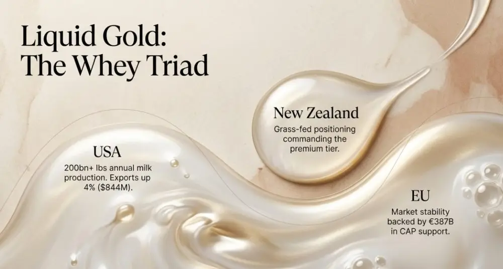
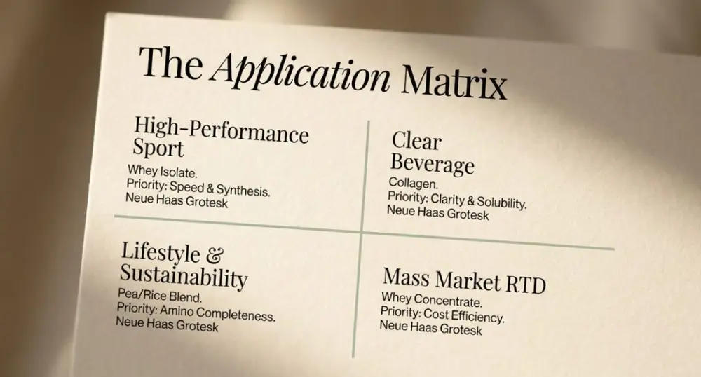

文章 / 飲品配方與資訊
Plant-Based Protein vs. Whey: Sourcing the Right Protein for Your Target Market
這篇是英文原文，尚未完成繁體中文翻譯。中文選單與相關商品連結不會切回英文介面。
查看英文原文（尚未翻譯）
The plant-based protein market reached $15.5 billion in 2024 and projects to hit $30.8 billion by 2034, yet whey maintains 55.2% market dominance while plant-based protein sales declined 3.7% over two years. For beverage brands and B2B procurement teams, protein sourcing decisions impact product performance, supply chain stability, cost control, and market positioning. This analysis examines supply chains, quality standards, market dynamics, and application strategies to guide protein procurement decisions.
Global Protein Supply Chain Landscape: Geography Determines Competitive Advantage
Whey protein supply concentrates in the United States, New Zealand, and the European Union. U.S. whey protein exports reached $844 million in 2024, up 4% year-over-year, supported by an efficient dairy ecosystem producing over 200 billion pounds of milk annually. New Zealand’s grass-fed whey commands premium positioning through strict quality controls, while EU suppliers benefit from €387 billion in Common Agricultural Policy support ensuring raw material stability.
Plant-based protein manufacturing centers in China, with Shaanxi and Shandong provinces hosting major pea protein capacity. Taiwan contributes specialized manufacturers like TEXTURE MAKER ENTERPRISE. However, plant-based proteins face three supply chain challenges: raw material price volatility, 8-10% higher processing costs than conventional whey, and organic certification scarcity. The USDA’s 2024 SOE organic verification program reduced counterfeit organic products but created shortages of authentic organic pea protein expected to persist until late 2025.
Procurement teams evaluating suppliers should prioritize capacity scale and responsiveness. Chinese large-scale manufacturers like Shandong Jianyuan Bioengineering operate 100,000+ square meter facilities but lack performance metrics. In contrast, Shenzhen Lifeworth Biotechnology demonstrates 38% customer reorder rates, indicating superior supply reliability. Taiwan’s TEXTURE MAKER ENTERPRISE achieves perfect review scores (5.0/5.0) with 5,500 square meter facilities.


Protein Quality Testing: Heavy Metals and Amino Acid Completeness
Clean Label Project’s 2023-2024 testing of 160 protein powders reveals critical quality differences: plant-based protein powders contain five times more cadmium than whey counterparts. Chocolate-flavored products show 110 times more cadmium than vanilla varieties. 47% of tested products exceeded at least one federal or state safety regulation, with 21% exceeding California Prop 65 standards by over 2X.
Whey protein demonstrates superior heavy metal profiles, but plant-based proteins offer distinct advantages. Properly processed pea, soy, and hemp proteins provide complete amino acid profiles. Research shows that when formulations contain 20-30 grams of protein and 6-15 grams of essential amino acids (including 1-3 grams of leucine) per serving, plant-based and whey proteins deliver equivalent muscle growth outcomes.
For beverage manufacturers, procurement decisions must incorporate third-party certifications. FDA cGMP, NSF, USP, FSSC 22000, and GFSI certifications establish baseline requirements. FSSC 22000, as a GFSI-benchmarked standard, integrates ISO 22000 food safety management systems, ISO/TS 22002-1 prerequisite programs, and additional FSSC requirements. This certification applies to food and beverage manufacturers of all sizes, ingredient additive producers, pet food, and packaging material manufacturers.
Beverage Formulation Applications: Selecting Protein by Product Positioning
Whey protein dominates functional beverages due to superior solubility, smooth mouthfeel, and rapid absorption characteristics. Whey protein isolate (WPI) exceeds 90% protein content with minimal lactose and fat, making it the preferred choice for sports nutrition. Market data shows WPI commands approximately 44% of global protein supplement markets, projecting 7% CAGR growth from 2024-2029.
Plant-based protein applications concentrate in specific market segments: vegan/flexitarian consumers, lactose-intolerant populations, and sustainability-focused brands. Pea protein dominates plant-based markets with 30.5% share in 2024 due to hypoallergenic properties and complete amino acid composition. Soy protein offers high protein density at competitive prices, suitable for mass-market products.
Protein selection strategies by product type:
| Product Category | Recommended Protein | Key Considerations |
|---|---|---|
| High-performance sports drinks | Whey isolate, casein | Rapid absorption, muscle synthesis efficiency |
| Plant-based beverages | Pea, rice, chickpea blends | Amino acid completeness, texture optimization |
| Ready-to-drink (RTD) protein | Whey protein concentrate (WPC) | Cost efficiency, functional performance |
| Clear beverages | Collagen | Clarity, solubility |
| Allergen-friendly products | Pea, oat protein | Low allergen profile, clean label |
Formulation design must address plant-based protein texture challenges. Pea and rice proteins often exhibit grittiness and off-flavors. Solutions include protein isolate grades for improved solubility, combined with flavor masking agents like cocoa, vanilla, or banana.


Market Trends and Supply Chain Risk Management
Whey protein faces unprecedented supply constraints. Between 2024-2025, some protein powder prices increased 50-110%. Contributing factors include surging GLP-1 weight loss medication usage (Ozempic, Wegovy), where patients may lose 25-40% muscle mass during weight reduction. Healthcare providers recommend whey protein supplementation, creating dual pressure from approximately 12% of Americans using GLP-1 medications alongside functional food market demand.
Major dairy companies are expanding capacity aggressively. Glanbia adds 10 million pounds of whey protein isolate capacity through a New Mexico joint venture, Ireland’s Tirlán committed €126 million to premium whey production, and Idaho Milk Products invested $200 million in new facilities. However, these capacity additions won’t reach full operation until 2026-2027, meaning short-term supply shortages and elevated pricing persist.
Plant-based protein markets show divergent trends. While overall market size continues expanding, powder supplement categories declined 3.7% since 2022. Consumer enthusiasm for plant-based diets has moderated from mid-2010s peaks, and muscle-building demographics still prefer whey protein. However, plant-based protein applications in functional foods and ready-to-drink (RTD) beverages accelerate rapidly, with online sales reaching 60.8% of plant-based protein supplement revenue in 2024, demonstrating convenience and variety driving market transformation.
Supply chain risk management requires dual-track strategies: primary suppliers paired with backup sources, plus quarterly supply chain review mechanisms. Dairy price volatility, geopolitical factors, and transportation delays can all impact supply stability, particularly in scenarios where global dairy shortages coincide with commodity oversupply.
Sustainability and Cost-Effectiveness Balance
Sustainability has become a critical brand differentiation factor. Plant-based proteins demonstrate significantly lower carbon footprints than animal proteins, with pea, rice, and fava bean proteins showing reduced environmental impact. Consumer research indicates millennials and Gen Z prioritize sustainable ingredient sourcing in purchasing decisions, willing to pay premiums for sustainably certified products.
However, plant-based proteins carry higher processing costs, with pea, hemp, or soy isolate production running 8-10% above conventional whey or casein costs, creating entry barriers in price-sensitive markets. Supply chain disruptions and raw material sourcing volatility further intensify cost pressures. Conversely, whey protein benefits from mature dairy supply chains, though premium sources like grass-fed whey escalated from $3 per pound in 2020 to $10 currently.
Cost-benefit analysis requires evaluating three dimensions: raw material costs, processing efficiency, and market positioning. Whey protein concentrate (WPC) achieves 51% North American market share due to cost-effectiveness, with extensive food and beverage applications including 59% in snacks and 26% in dairy products. Plant-based proteins suit positioning in premium markets, sustainability brands, or specific dietary requirement product lines (vegan, allergen-friendly), offsetting cost disadvantages through brand value and differentiation.

References
- Grand View Research – Plant-Based Protein Supplements Market
- US Import Data – Whey Protein Suppliers & Manufacturers
- Clean Label Project – Protein Study 2.0
- Dairy Reporter – Whey Protein Supply Chain
- NSF International – FSSC 22000 Certification
Frequently Asked Questions
Whey protein achieves 78% solubility, dispersing rapidly in room-temperature water without precipitation, ideal for ready-to-drink beverages. Plant-based proteins, due to higher fiber content, often exhibit grittiness. Solutions include isolate-grade proteins combined with emulsifiers for texture improvement, or flavor masking using cocoa, vanilla, or flavor syrups for optimal sensory profiles.
The USDA’s 2024 SOE organic verification program cracked down on counterfeit organic products, creating authentic organic pea protein shortages expected to improve by late 2025. North American organic raw materials remain particularly scarce. Brands requiring organic certification must lock in suppliers early and accept higher procurement costs.
Approximately 12% of Americans use GLP-1 medications like Ozempic and Wegovy, potentially losing 25-40% muscle mass during weight reduction. Healthcare recommendations for whey protein supplementation create supply-demand imbalances, driving 50-110% price increases in 2024-2025. Short-term supply constraints are expected to persist until 2026-2027 capacity expansions complete.
Prioritize suppliers with FSSC 22000, FDA cGMP, NSF, or USP third-party certifications. Evaluate capacity scale (minimum 5,000 square meters), customer reorder rates (recommend 30%+), response times (under 2 hours), and heavy metal testing reports. Whey protein suppliers should confirm sourcing origins (U.S., New Zealand, EU preferred); plant-based protein suppliers require authentic organic certification verification.
Blended formulations address amino acid gaps in single plant proteins, improving bioavailability. Common combinations include pea plus rice protein or pea plus hemp protein. Recommend 20-30 grams protein with 6-15 grams essential amino acids (including 1-3 grams leucine) per serving to achieve muscle synthesis outcomes equivalent to whey protein.
Author: Michael Zhang
As a beverage ingredient procurement consultant, I observe a critical shift: protein sourcing decisions no longer represent a binary “plant versus animal” choice, but rather a strategic question of “how to configure optimal protein portfolios across different product lines.” High-performance sports beverages will continue prioritizing whey protein isolate for irreplaceable absorption speed and muscle synthesis efficiency. Yet plant-based proteins are rapidly gaining application value in sustainability brands, allergen-friendly products, and specific dietary markets. Procurement teams should establish dual-track supply chains, mastering both whey and plant-based protein resources while flexibly allocating based on target market characteristics. More importantly, as GLP-1 medications drive medical nutrition market expansion, protein ingredients are evolving from “fitness supplements” to core ingredients in “functional health foods,” redefining the protein supply chain landscape for the next decade.